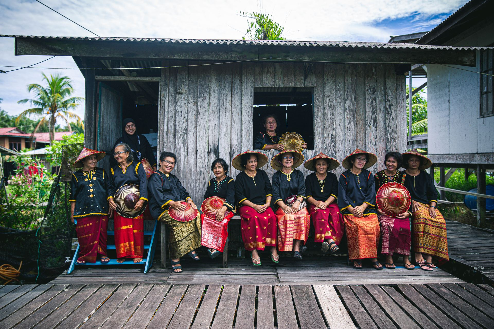

Weaving Stories in the Palm of a Hand
Melanau Terendak craftsmanship documented stage by stage, filmed entirely on a phone so the record could be made inside people's homes and workspaces.
Kampung Tanam, Mukah
Research poster Mobile documentary